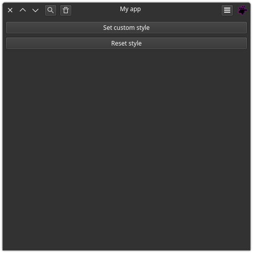

Quick start
We will start by downloading the project and configuring the environment.
Download and configure
Download and enter the project directory:
git clone https://github.com/reticulardev/pysidex.git && cd pysidex/
Configure your virtual environment:
python3 -m venv venv && . venv/bin/activate
Update pip and install dependencies:
python -m pip install --upgrade pip && python -m pip install -r requirements.txt
Run the example to see it working:
python src/demo.py

The imports
In your code file, import the sys lib, import PySide to have access to all
widgets, import PySideX to build the CSD window and finally configure the
snake_case feature. As already mentioned, the project uses the snake_case
feature to obtain idiomatic code.
import sys
from PySide6 import QtCore, QtGui, QtWidgets
from PySideX import QtWidgetsX
from __feature__ import snake_case
The minimal example
A highly discouraged minimal example would be:
app = QtWidgets.QApplication(sys.argv)
window = QtWidgetsX.QApplicationWindow()
window.show()
sys.exit(app.exec())
This would give you a little window that can be resized in any direction. However, there is no button to close the application and, depending on your platform, it may be difficult to close the application:

A better minimal example in this situation includes adding a headerbar to access the window control buttons:
class Window(QtWidgetsX.QApplicationWindow):
def __init__(self):
super().__init__()
self.main_layout = QtWidgets.QVBoxLayout()
self.central_widget().set_layout(self.main_layout)
self.main_layout.set_contents_margins(0, 0, 0, 0)
self.main_layout.set_alignment(QtCore.Qt.AlignTop)
self.headerbar = QtWidgetsX.QHeaderBar(self)
self.main_layout.add_widget(self.headerbar)
app = QtWidgets.QApplication(sys.argv)
window = Window()
window.show()
sys.exit(app.exec())
Note that a central widget with appropriate settings already exists. As it is already accessed directly, there is no need to create one.
self.central_widget().set_layout(self.main_layout)
Also note that the headerbar widget is independent, meaning you can place it wherever you want, which is why we aligned it at the top.
self.main_layout.set_contents_margins(0, 0, 0, 0)
self.main_layout.set_alignment(QtCore.Qt.AlignTop)
This is the result:

A more complete minimal example
In this example, we will add the 'os' library to add an icon with a dynamic path. The icon, once configured in the window, will be automatically recognized by the header bar.
The title is not automatically recognized by the header bar as in the case of the icon, because not in all use cases a window needs to have the title displayed. In our case, if we want to see the window title, we need to manually redirect it to the header bar.
#!/usr/bin/env python3
import os
import sys
from PySide6 import QtCore, QtGui, QtWidgets
from PySideX import QtWidgetsX
from __feature__ import snake_case
SRC_DIR = os.path.dirname(os.path.abspath(__file__))
sys.path.append(SRC_DIR)
class Window(QtWidgetsX.QApplicationWindow):
def __init__(self, *args, **kwargs) -> None:
super().__init__(*args, **kwargs)
# Window icon
icon_path = os.path.join(SRC_DIR, 'icon.svg')
window_icon = QtGui.QIcon(QtGui.QPixmap(icon_path))
self.set_window_icon(window_icon)
# Layout
self.main_layout = QtWidgets.QVBoxLayout()
self.main_layout.set_contents_margins(0, 0, 0, 0)
self.main_layout.set_alignment(QtCore.Qt.AlignTop)
self.central_widget().set_layout(self.main_layout)
# Headerbar
self.headerbar = QtWidgetsX.QHeaderBar(self)
self.main_layout.add_widget(self.headerbar)
# Window title
self.set_window_title('App title')
self.headerbar.set_text(self.window_title())
if __name__ == '__main__':
app = QtWidgets.QApplication(sys.argv)
window = Window()
window.show()
sys.exit(app.exec())
This is the result: